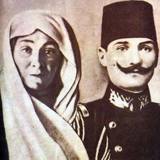
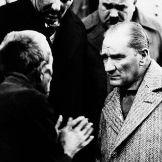
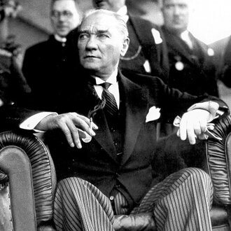
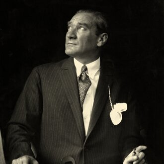
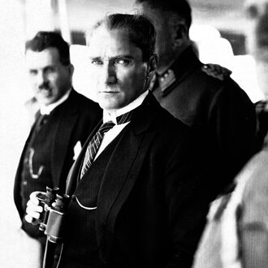
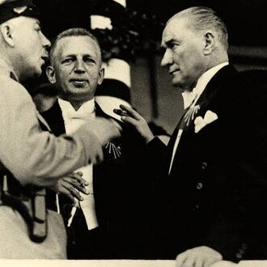
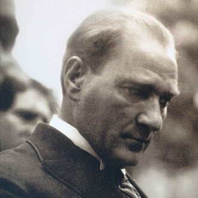
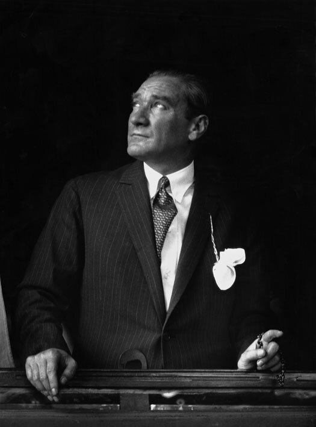
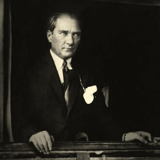

- Birth of Mustafa Kemal Ataturk to Ali Riza and Zübeyde at Salonika.

- German military mission established in Ottoman Empire.

- Young Mustafa enters Military Secondary School at Salonika and is given the additional name of Kemal.

- Mustafa Kemal enters Military Training School at Monastir.

- Revolt by students of Military Medical School in Istanbul suppressed.

- 17 April. Ottoman-Greek war commences, following a Greek threat to annex Crete. Peace settlement by intervention of the European Powers.

- State visit of Kaiser Wilhelm II to Ottoman Empire.
- 13 March. Mustafa Kemal enters War College in Istanbul.
- Mustafa Kemal graduates as Lieutenant, General Staff College in Istanbul.
- 11 January. Mustafa Kemal graduates from the General Staff College with the rank of Staff Captain and is posted to the Fifth Army, based in Damascus
- October. Mustafa Kemal helps to found Fatherland (Vatan) Society in Damascus.

- 20 June. Mustafa Kemal promoted Adjutant-Major.
- September. Mustafa Kemal posted to Third Army at Salonika.

- 24 July. 'Young Turk' Revolution in Salonika. Committee of Union and Progress forces Abdulhamit to restore Constitution of 1876 and recall Parliament.
- 5 October. Bulgaria proclaims independence.
- 7 October. Austria-Hungary annexes Bosnia and Herzegovina.
- 12 October. Crete votes for Union with Greece.
- Mustafa Kemal sent to Tripolitania on mission for Committee of Union and Progress.
- 13 April. Counter-revolution in Istanbul. Union and Progress striking force, with Mustafa Kemal as divisional chief of staff, marches on the city from Salonika.
- 27 April. Deposition and exile of Abdulhamit. Succession of Mehmet V as Sultan.
- Mustafa Kemal attends Congress of Union and Progress Party in Salonika.
- 6 September. Mustafa Kemal appointed Commander of Third Army and later Commander of Thirty-eighth Infantry Regiment.
- Mustafa Kemal serves as Chief of Staff in suppression of revolt in Albania.
- Mustafa Kemal sent to Paris with military mission to attend French army manoeuvres.
- 13 September. Mustafa Kemal is posted to the General Staff in Istanbul.
- 5 October. Italian invasion of Tripoli.
- Mustafa Kemal with Turkish Forces at Tobruk and Derna.
- 27 November. Mustafa Kemal promoted to Major.
- 8 October - 3 December. Beginning of First Balkan War. Montenegro, Serbia, Bulgaria and Greece at war with Ottoman Empire. Severe Turkish defeats. Salonika falls to the Greeks. Mustafa Kemal leaves Cyrenaica and returns to Istanbul. Coup d'etat against Government by Union and Progress officers.
- 25 November. Mustafa Kemal appointed Director of Operations for relief of Adrianople.
- Fall of Adrianople.
- 30 May. Treaty of London between Ottomans and Balkan states.
- 30 June - 20 July. Second Balkan War. Bulgaria attacks Greece, Serbia and Rumania. Ottomans recovers Adrianople.
- 27 September. Treaty of Bucharest restores territory to Ottoman Empire.
- 27 October. Mustafa Kemal appointed Military Attaché in Sofia.
- 1 March. Mustafa Kemal promoted Lieutenant-Colonel.
- 28 June. Assassination of Archduke Franz Ferdinand at Sarajevo.
- 16 July. Mustafa Kemal sends despatch to War Minister from Sofia, urging a policy of Turkish neutrality in the event of war, with a view to possible later intervention against Bulgaria and the Central Powers.
- 28 July. Austria declares war on Serbia, with support of Germany.
- 2 August. Ottoman leadership signs secret alliance with Germany.
- 11 August. Ottomans purchase German warships Goeben and Breslau on arrival in the Bosporus.
- 28 October. Ottomans shells Russian Black Sea ports.
- 3 November. Russia declares war on Ottoman Empire.
- 5 November. Britain and France declare war on Ottoman Empire.
- 2 February. Mustafa Kemal appointed to reorganize and command Nineteenth Division in Thrace.
- 19 February. Unsuccessful Allied naval attack on Dardanelles.
- 25 February. Mustafa Kemal establishes Headquarters of Nineteenth Division at Maidos on Gallipoli Peninsula.
- 18 March. Allied navy fails to force the Turkish Straits. Mustafa Kemal demonstrates outstanding skills as a soldier and commander throughout the battle at Canakkale.
- 25 April. Allied military landings at Ariburnu (Anzac Cove). Advance checked by Mustafa Kemal with his outstanding leadership of the Nineteenth Division.
- 1 June. Mustafa Kemal promoted Colonel.
- 8 - 9 August. Mustafa Kemal appointed to command of Sixteenth Army Corps.
- Checks second Allied advance on Gallipoli Peninsula.